Немного рефлексии над III семестром
Мое предыдущее лето было такой тяжелой отдышкой после конца первого курса, о котором, я надеюсь, у меня рано или поздно получится дописать пост. Тут я хотел отрефлексировать свою жизнь, начиная с сентября 2025 года. Но даже блок про III семестр получился довольно большим, поэтому выложу его отдельно.
Жизнь
Начался учебный год у меня достаточно пресно. Про учебу и работу будет ниже, поэтому тут я хочу написать только про какие-то личные моменты и приколы.
Я не искал отношений, но в сентябре начал общаться с девушкой по имени Полина. Я не хочу ее деанонить, поэтому подробностей про нее будет мало, но ее имя называю несмотря на это. Мы начали с ней общаться, потому что проходили один курс. Я, если честно, очень восхищался ей и она мне очень нравилась, можно сказать, что я почти влюбился. Мы даже сходили с ней один раз в зоопарк (норм же место для свидания хули, хотя кто-нибудь бы сказал что это не свидание, потому что это не оговаривалось как свидание).
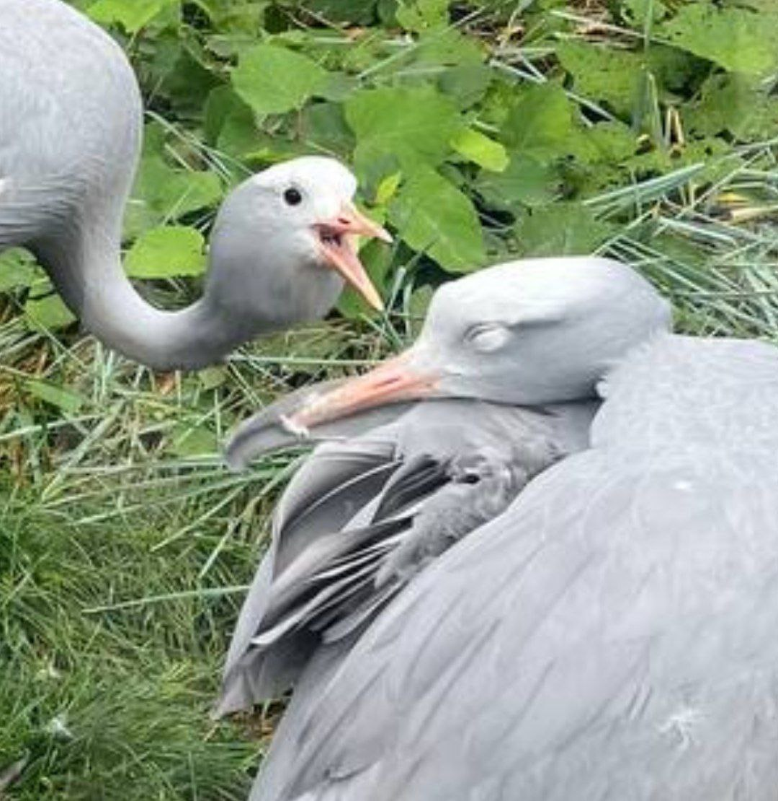
Я при этом не могу сказать, что мы как-то метчились сильно по вайбу, она еще из богатой семьи, а я жил (и живу) как обрыган в хате с тараканами. Слушали совсем разную музыку (а для меня это, судя по всему, важно) и все такое. Она перестала со мной общаться после того, как я в наплыве ночной шизы поспрашивал у нее всякий бредик по типу «секс втроем это измена?».
Потом я написал забавный фанфик с ее именем.
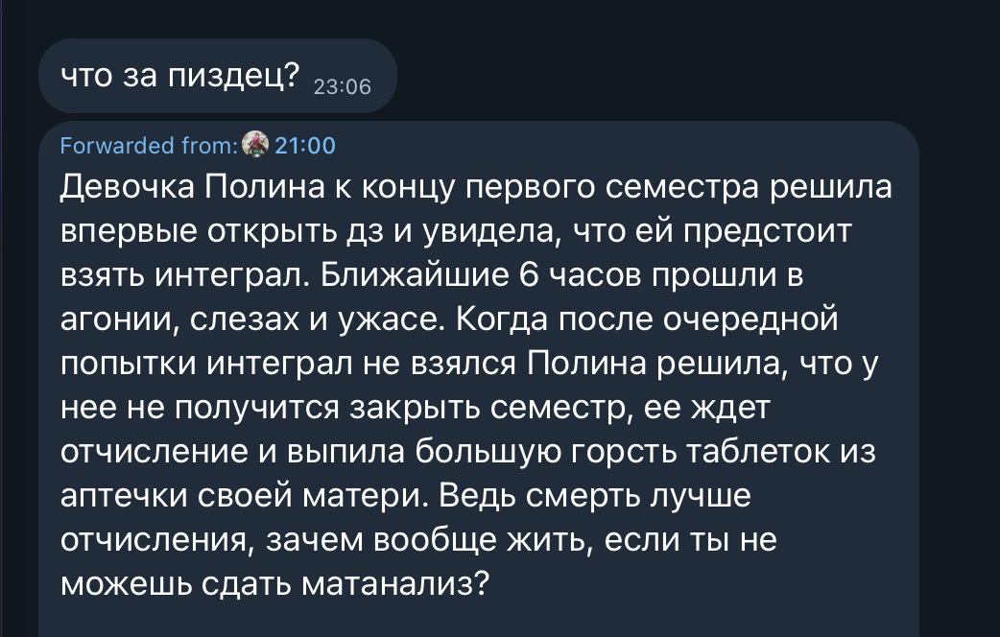
Сейчас пересмотрел ее фотки и все-таки она пиздец красивая. Ладно, проехали.
Еще из забавных историй была такая с телевизором: за день до какого-то корпоратива в яндекс приехало много коллег из Минска и других мест. И мы пошли огромной компанией в бар. Причем бар организовывал нам я, потому что никто больше не взялся на 20 человек чего-то организовывать.
Мы пришли в этот бар, и я начал очень нахуяриваться. Я выпил очень много: что-то около 5-6 сидров и два лонг айленда. Мне стало очень плохо, и когда я выходил, я наебнул телевизор. Мне казалось, что я не понял на тот момент, что произошло. Но коллеги сказали, что официант им сказал, что я так дал по съебам, что наебнулся с лестницы снизу.
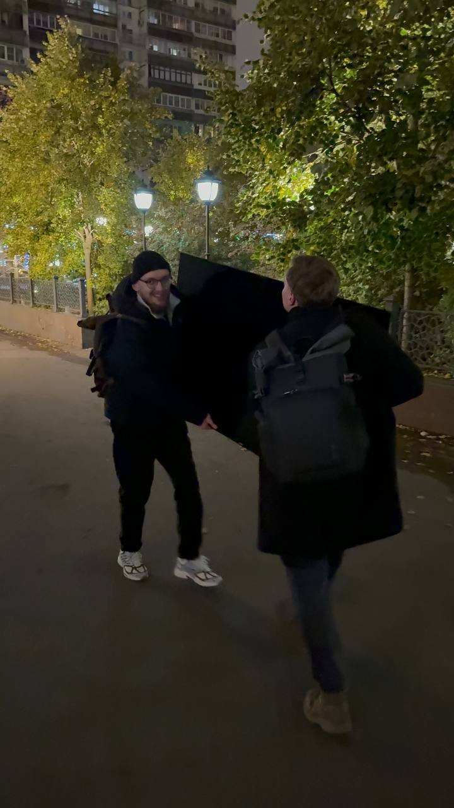
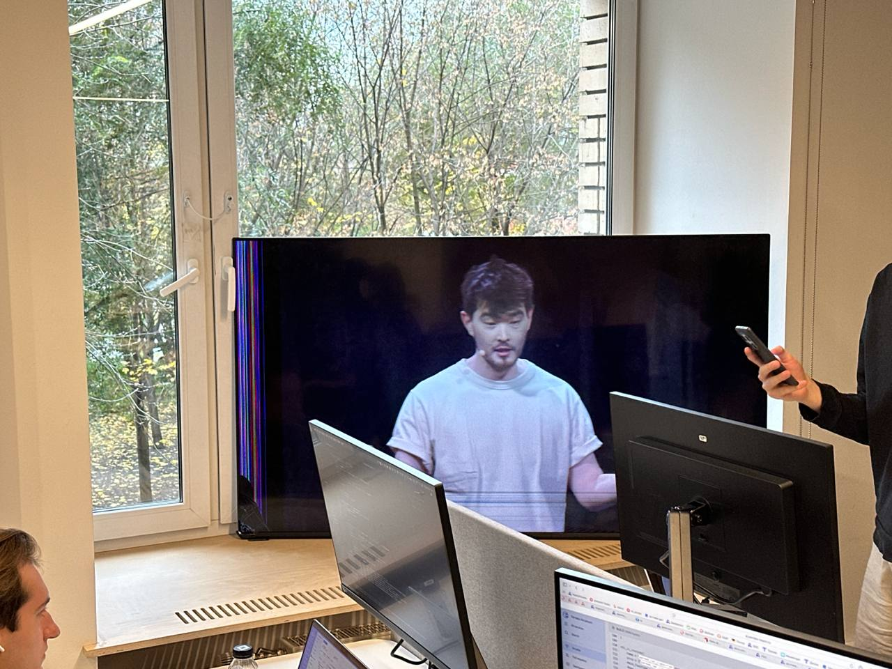
В итоге коллеги выкупили телевизор за 40 тысяч рублей, из которых 16 тысяч я закинул на следующий день, когда мне рассказали, что случилось. После этого я куда-то упиздовал гулять по центру, кинул кружок в рабочий чат с припиской «как красиво» и после этого уехал на такси домой.
Дома на следующий день я обнаружил, что заблевал тумбочку и пространство около туалета (и уже даже не помню, что еще). Мне было невероятно хуево: я даже разговаривал с трудом. Но я даже приехал на работу на следующий день, где мне все рассказали. После этого я понял, что я не могу работать и не хочу ехать на корпоратив в TAU в этот день.
Мой мозг настолько атрофировался тогда, что я захотел поехать в бордель во второй (и в последний) раз в жизни. Это был дешевый бордель и второй хуевый опыт. Эту историю я мало кому рассказывал вообще, думаю, когда-нибудь сниму ролик на ютуб с рассказом про это. Но из хорошего: после этого я сдавал анализы на ЗППП и ничего у меня не нашли серьезного.
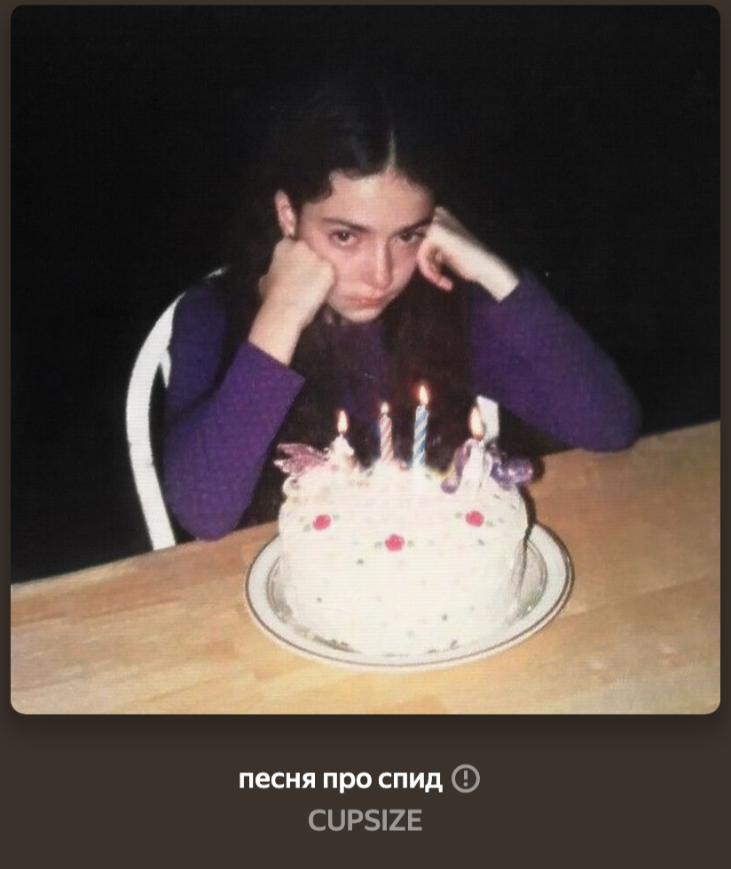
Еще потом был на работе Хэллоуин и меня на работе накрасили в клоуна. С этой раскраской я без рофла просидел целый день и вечером пошел в зал.
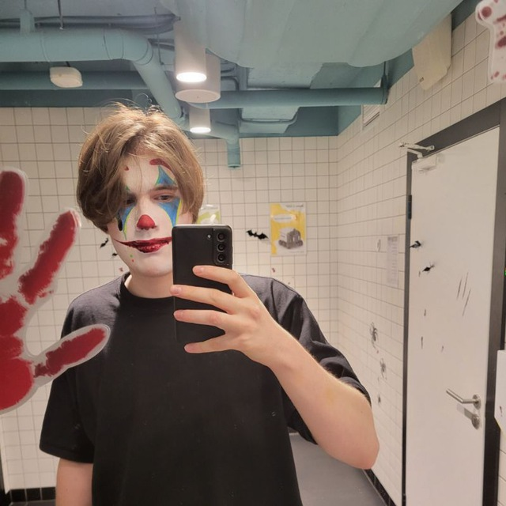
Ноябрь был уже понасыщенней. Было три концерта, которые я посетил в тот месяц (я наверняка что-то из концертов в третьем семестре забыл, но уже неважно):
- 2 ноября — cupsize, Москва
- 11 ноября — кишлак, Питер
- 22 ноября — кишлак, Москва
Да, я ездил в Санкт-Петербург на концерт Кишлака и мне все понравилось. Из забавного я договорился переночевать с человеком, с которым познакомился в интернете (он мой подписчик). Когда я приезжал, я попросил его найти нам дефку, которая нас прикольно накрасит перед концертом.
В итоге получилось вообще не так, как я хотел: во-первых, я поздно приехал к чуваку (его зовут Егор). Егор честно нашел однокурсницу, которая была готова нас накрасить. Но была некоторая проблема, что из косметики нужной у нее была только палетка с 6 красками и кисточка для рисования на бумаге. А нам для образа злого черного клоуна нужно было, по сути, жестко обелить лицо и сделать грим. Так что мы соснули и ушли с пидорским макияжем. Если его описывать, то выглядел он так: глаза и ресницы покрашены в черный по периметру. Это было так плохо, что я даже не стал делать фотку. Но той девушке спасибо всё равно, она пришла и постаралась!
Концерт был в клубе А2 и, как я помню, вроде это было норм местом. Это был один из немногих концертов, где я тусил без очков, но много слемился. И, если честно, в очках прикольней тусить, но слемиться страшно. Очки дорогие, стоят где-то 15-16 тысяч (а сейчас, может, и того дороже).
Долго оставаться у Егора я не захотел, потому что всё равно надо работать, а на улице холодно и вечером не потусишь. А дома одному поприятней как-то, что ли.
Напоследок тут расскажу, как мы праздновали Новый год: мы праздновали его у Гоши дома вообще странной компанией из меня, Гоши (моего лучшего друга) и Саши (моей подруги). Хотели изначально чуть большей компанией впятером, но двое не захотели тусить с нами по тупорылой причине, которую я, наверное, никогда не пойму. При этом я ко всем из них хорошо отношусь, всех люблю. Почему Саша с нами тусила мне тоже до конца не понять, она могла праздновать с семьей лучшей подруги, но постеснялась, судя по всему. Ярик, второй мой лучший друг, тоже прийти не смог, к сожалению.
Немного еще про олимпиадки
Решил выделить это в отдельный заголовок, так как непонятно, куда это отнести, а также тут есть чего рассказать. У меня всегда так было, что я писал командные олимпиады с какими-то побочными командами из знакомых людей. Иначе было, наверное, один раз: в 11 классе на ВКОШП. У нас тогда была реально сильная команда из меня, Артема Алексеева и Ярика Семенюка. Мы тогда чуть не стали топ1 командой на МКОШП вообще (по итогу топ2 с отрывом 1 бревно по штрафу). На ВКОШПе нам скорее не повезло с задачей, которая нам оставалась, чтобы войти в золото/серебро, и в итоге мы заняли бронзу. Но бронза — это тоже неплохо, я радовался. Все-таки хоть и с туром не подфартило, но мы всё равно своим уровнем в медали вышли.
Так и на втором курсе получилось, что Артема вообще отчислили из вышки, а у Ярика, кажется, своя, другая команда уже была с людьми, которыми он кентится. И я бы вообще не писал 1/8 ICPC или писал бы совсем по фану, если бы меня не позвали в команду Дима Ремпель и Илья Логинов. Их бывший сокомандник больше не захотел участвовать в ICPC с ними, и они позвали меня.
И так получилось даже, что у нас получилась неслабая команда. Да, понятно, что это не тир FFTilted, но команда всё равно сильная (особенно когда все в прайм выйдут, на последней 1/4 так в прайм полноценный и не вышли). Мы назвались TYANDEX в честь Тинька и Яндекса, где мы работали с Димой. Еще это можно обыграть как tyan (тян) dex. Хз, что должно dex значить (клуб?), но прикольно.
И мы написали несколько тренировок и вышли на 1/4! Для меня это было радостно, потому что на 1 курсе со своей прошлой командой мы не вышли на 1/4. Потом произошло немного неприятное, и Диме надо было уехать на даты 1/4. Мы хоть и не ждали, что выйдем на 1/2, но я расстроился всё равно. Мы попросили Густокашина поменять нам сокомандника и с этим новым сокомандником даже написали 1 тренировку вроде.
Но потом выяснилось, что Дима сможет с нами написать, и мы на подъеме эндорфина начали тренироваться в меру того, что мы все трое работяг. Мы садились писать контесты по выходным либо после рабочих дней с 19 до 24. Мысли попасть на 1/2 не было, но мы тренировались на результат. И даже заняли топ20 на 1/4! Это явно не максимум нашей команды, но и неплохой результат.
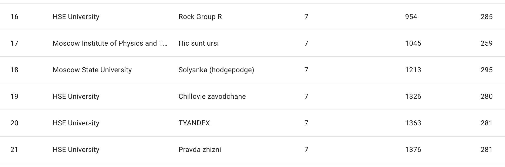
Еще я писал в тот период Yandex Cup по треку алгоритмов для сотрудников. И я прошел, заняв 4 место по сотрудникам. Конечно, я понимаю, что это, по сути, является квотой для бомжей. Но кто же не съездит в Стамбул, когда ему дают такую возможность? Писал Yandex Cup я 2 ноября, в день концерта cupsize, и сам капсайз тогда еще и опоздал достаточно сильно, чтобы я успел к началу.
На самом финале меня чуть не дисквалифицировали в первый же день. Дело в том, что я написал в чат олимпиады, что организация говно. Я не справился найти людей, которые бы меня встретили и довезли до отеля. Да, безусловно, «говно» было преувеличением, и в целом мероприятие было очень хорошо организовано. Но мне было как-то не очень хорошо, и я написал очень резко. В общем, забавно было бы оказаться дисквалифицированным в первый же день.
Да и всё равно я набрал 0 баллов на туре, так как не хотел дрочить частичные баллы. Но зато Стамбул — красивый город, и я купил кроссовки себе там. Я, правда, не знал, что можно вернуть налог 20% с кроссовок. Было неприятненько.
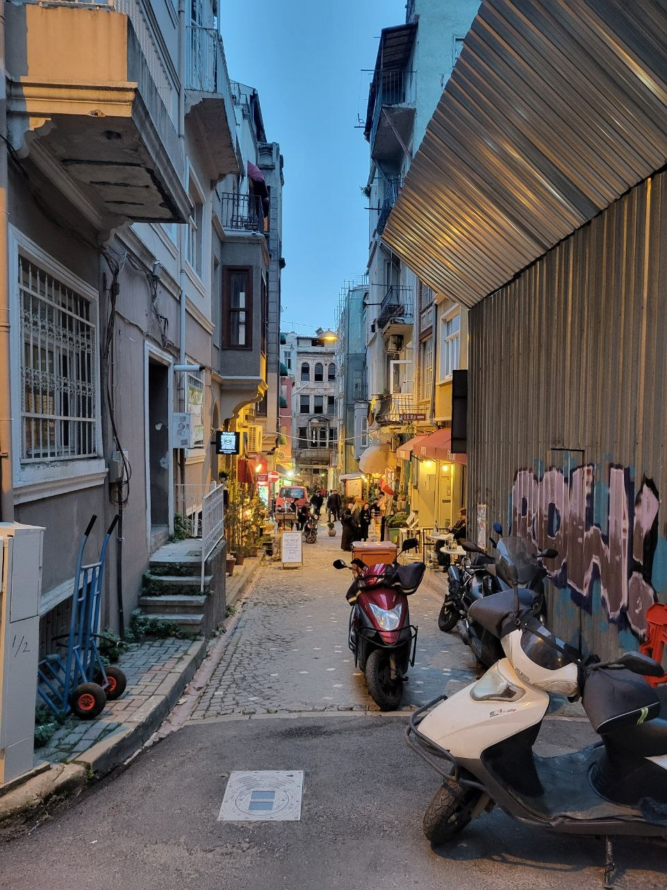
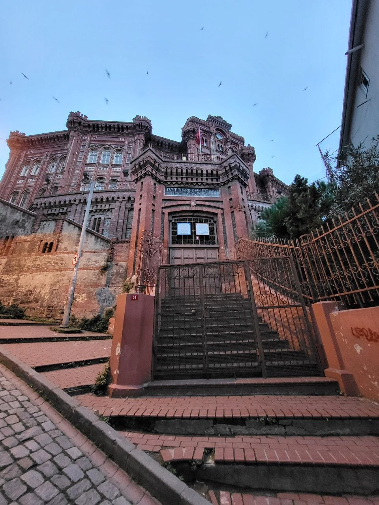
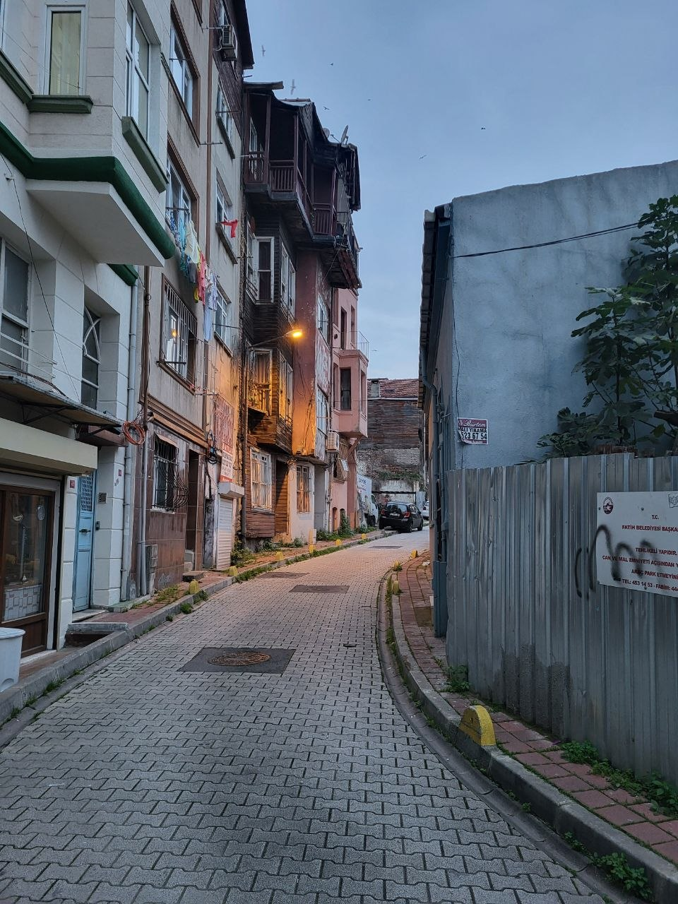
Учеба
Моя жизнь большую часть времени вертелась вокруг работы и учебы, но учеба во всех смыслах важнее: ее надо, во-первых, закрыть, а во-вторых, еще и научиться чему-то надо. Я уже успел почувствовать, насколько я прокачался благодаря математике с первого курса, который закрывал полностью своими силами (без нейросетей).
Второй год был в этом смысле намного хуже, потому что очень много вместо меня учился Gemini и Claude. Когда и как подробно я описывать не буду, но это реально было нейросетевым блядством.
Мои предметы в этом семестре были такими:
- Матан-2: очень прикольный курс, где Матвей Смирнов рассказал про интеграл Лебега и преобразование Фурье. Почти все доказательства были элегантными и не очень длинными. Из прикольного я прям преисполнился всеми теоремами сходимости рядов, которые были даны в начале курса, но и оставшуюся часть программы в целом я осознал (даже колки сдал неплохо). Мне в принципе эта часть математики очень понравилась, поэтому в следующем семесте я набрал себе убийственное комбо (об этом потом). Матвей вел хороший авторский конспект своего предмета, а также были записи лекций от roman_geek (спасиб огромное ему за них).
- Теорвер: было некоторое пересечение с матаном по части меры Лебега, но я не жалуюсь, потому что у меня было больше времени подумать над концепцией сигма-алгебр. Первые домашки были довольно неприятными и занимали много времени чтобы сделать. В итоге я сделал где-то половину первых домашек, так как после того, как я получил 10 за колоквиум в начале второго модуля, я перестал делать домашки по теорверу. То есть я продолжил асинхронно смотреть лекции и все такое, но домашки уже не делал. Оглядываясь назад, здесь надо было чуть-чуть поднапрячься и сделать домашки, чтобы облегчить себе жизнь в третьем модуле. Шабанов неплохо и размеренно объяснял материал, но тут надо остановиться и уточнить, что многие лекции мне приходилось смотреть несколько раз, чтобы осознать происходящее в полной мере. Поэтому большинство лекций к концу семестра мне приходилось смотреть по два или даже по три раза.
- Углубленный курс по C++: я взял этот курс, чтобы снять с себя нагрузку. Несмотря на то, что для большинства людей это считается сложным курсом, я уже эту собаку съел на работе, изучая курсы Мещерина из МФТИ. Курсы Ильи Мещерина были достаточно хорошие, хотя мои знакомые из МФТИ говорят, что я дилетант, поскольку не сделал домашки, а это, как утверждается, главная часть курса. Может быть они и правы, но у меня было неплохое закрепление этого курса работой. После курса Ильи Мещерина курс по плюсам от Скворцова был полным дермищем. Я не понимаю, зачем пытаться упихивать годовую программу в полгода, мне это кажется полным безумием. Я не понимаю, зачем было говорить про многопоточность, если эту тему надо обсуждать еще полгода на другом курсе. Очень много вопросов и очень мало ответов. Впрочем, на этом курсе я тоже успел опозориться на колоквиуме, когда начал пытаться доказать, что реализация тредпула, которую от нас хотели услышать на колоквиуме — говно и так не надо писать. Реализация тредпула с очередью и мьютексом действительно говно, но у меня смешались абстракции в голове, и я начал бредик рассказывать. Бывает, хули. Даже какой-то хороший балл получил в итоге за курс. Несмотря на все это, сам Скворцов сам по себе крутой разработчик и под его руководством сделано много крутых вещей в Яндексе. Просто, наверное, преподавательство не его стезя.
- АКОС: у Олега Шатова была разнарядка сделать этот курс простым для людей, которые хотят обучать модели в будущем, а не заниматься разработкой. В итоге курс по большей части состоял из рассмотрения API операционной системы и ассемблера (без avx/sse и другой приблуды). В итоге все получилось довольно поверхностно и беззубо. Несмотря на это, я проделал домашки самостоятельно и получил какое-то представление об операционной системе, отличающееся от черного ящика.
- Машинное обучение: я не хочу про это разговаривать. Закрыл и закрыл. Когда-нибудь я реально круто в этом разберусь, но пока у меня другие цели и планы.
- ИПР (которое было во 2 и 3 модуле): слабый курс. Я говорю даже не про подбор тем, а просто про то, что повествование было очень поверхностным. Можно было сократить набор тем в два раза и поковырять кишки разного, но в итоге просто всего по чуть-чуть было.
- Чуть не забыл про последний модуль Алгоритмов и Структур Данных. Мне было откровенно лень ботать темки, которые там были, в итоге я просто закрыл контестами и домашками на 4. Мне было немного странно видеть и слышать, что бывшие олимпиадники закрывали контесты нейронками. Но уже точно не мне осуждать людей за это.
Важный шаг, который я сделал в этом семестре — это уход из программы ИИ360. Я понял, что не хочу больше заниматься этим. Не хочу нервничать по поводу того, что мне по-хорошему надо делать какой-то ресерч для программы, а я работаю просто и не делаю никакого ресерча. Еще я не хотел брать отпуск и ехать заниматься в проектную школу ИИ360. Написал такие сообщения Евгению Соколову:
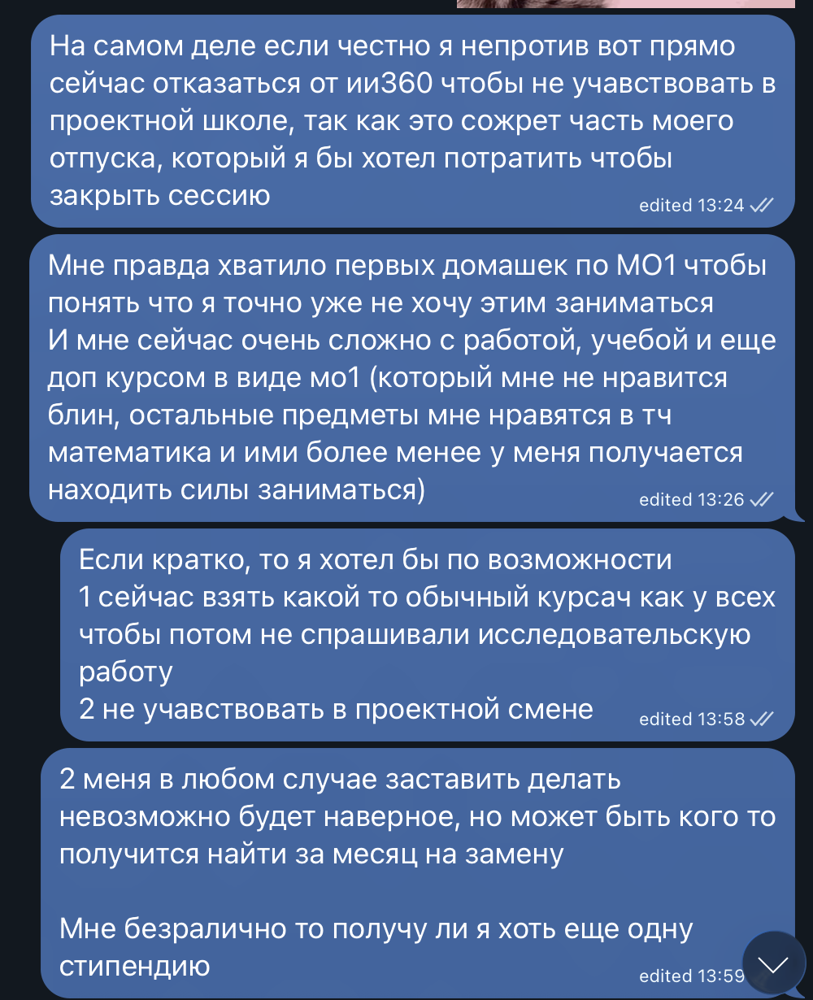
Меня без лишних вопросов сняли с ИИ360. Из прикольного: меня в следующем семестре освободили от повторного изучения машинного обучения, так как я его закрыл в первом семестре. Также мне как-то получилось выбить себе математический предмет вместо майнора (об этом еще будет ниже написано).
Еще из забавного меня Дима Трушин позвал (я напросился) принимать колоквиум по линалу. Мне понравилось принимать линал, а заодно я наконец-то полностью осознал доказательство основной теоремы алгебры. Красивенько.
Работа
Это вообще самая неинтересная часть моей жизни. Я вышел в штат Яндекса и что-то делал. Я не очень удовлетворен своими результатами, но и как по-другому надо было делать, я не очень представляю.
Я приходил на работу, работал, вечером и по выходным смотрел лекции и делал домашки. Такая вот рутина. Но эта рутина меня сильно подтолкнула на самом деле. Работа, хоть и высасывала силы из меня, но она держала меня собранным и не давала расслабиться. Домашку можно отложить, а работу требуется довести до конца и в понятный срок (по срокам, правда, и так все хуево было). Забавно, как я больной с температурой в последние пару недель перед отпуском делал свою самую важную задачу, которая еще и была достаточно срочной.
Про работу могу рассказать, что я много раз оттуда хотел уволиться. Мне казалось, что я продаю свою молодость и свое будущее за копейки. Это в целом так и есть, но, наверное, это не худший вариант из возможных. Всё равно мне бы пришлось работать где-то рано или поздно, чтобы жить. Анализируя, где я бы мог поступить лучше, я не могу найти понятный ответ.
Я еще начал общаться с Марком Обозовым (это человек, заслуживающий отдельного лонгрида), и он предлагал мне пойти к нему в ресерч команду. И я тогда реально чуть не ушел с работы разработчиком в ресерч ML. Но тогда я совсем не хотел заниматься машинным обучением и не пошел.
С Марком, кстати, у меня и по сей день хорошие отношения. Может, когда-нибудь с ним фонд откроем или что-то другое забавное сделаем (он о таких планах не в курсе, если что, да и не то чтобы это какие-то конкретные планы). У них, кстати, крутая команда получилась и уже есть accept на A* конференцию!
Заключение
В итоге у меня получился какой-то разумный трейдофф между учебой и работой. Идеальных результатов не получил ни в одном месте. Но я уверен, что рано или поздно все мои образовательные активности сойдутся с работой, и я жестко выстрелю. В конце концов, полностью с головой уходить в работу было бы ошибкой, а полностью уйти в учебу я не мог.